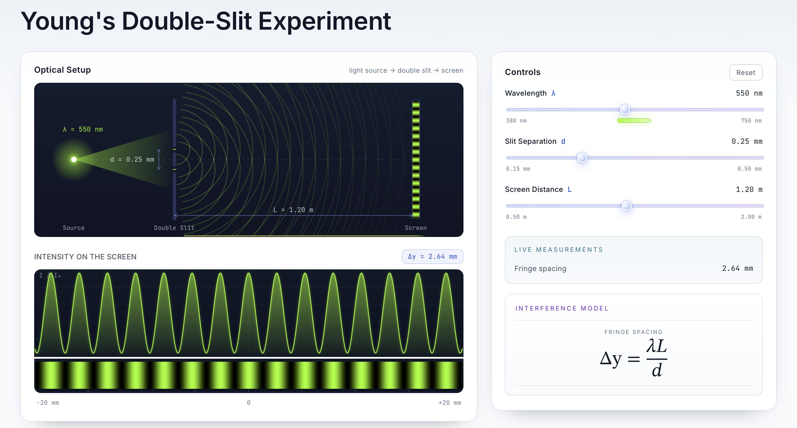
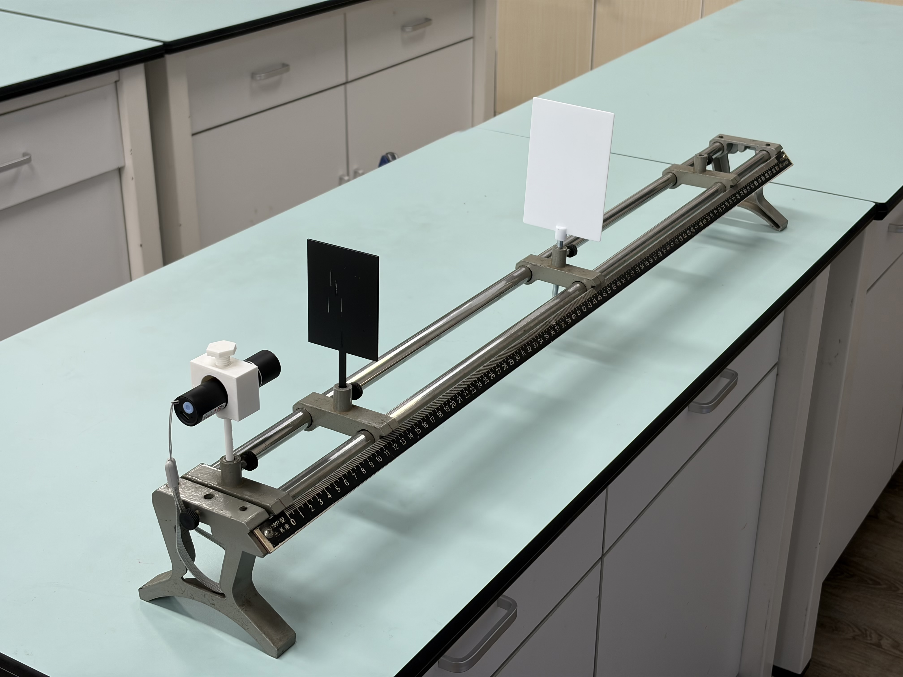
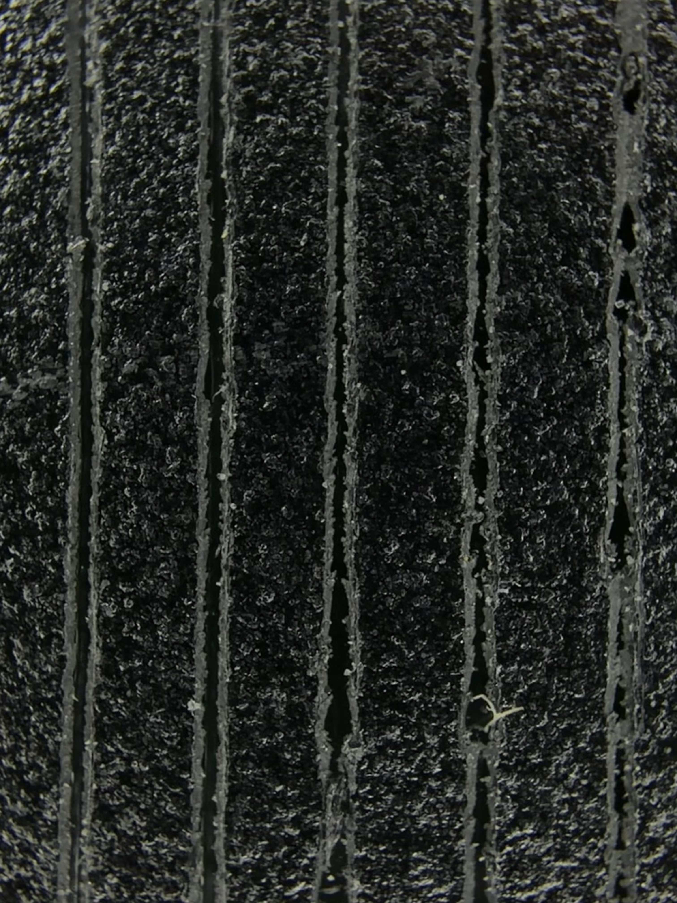
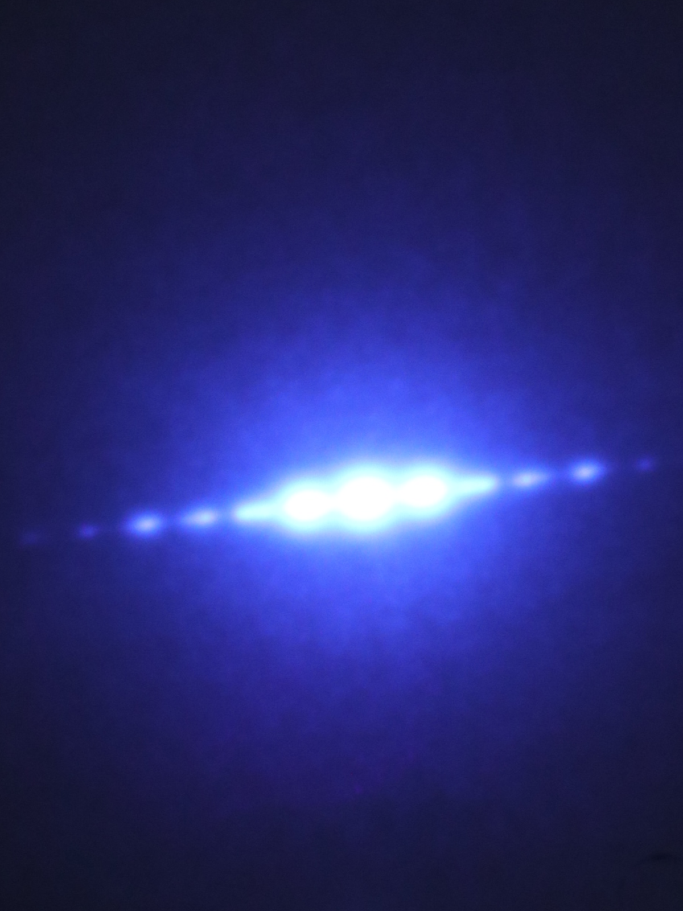
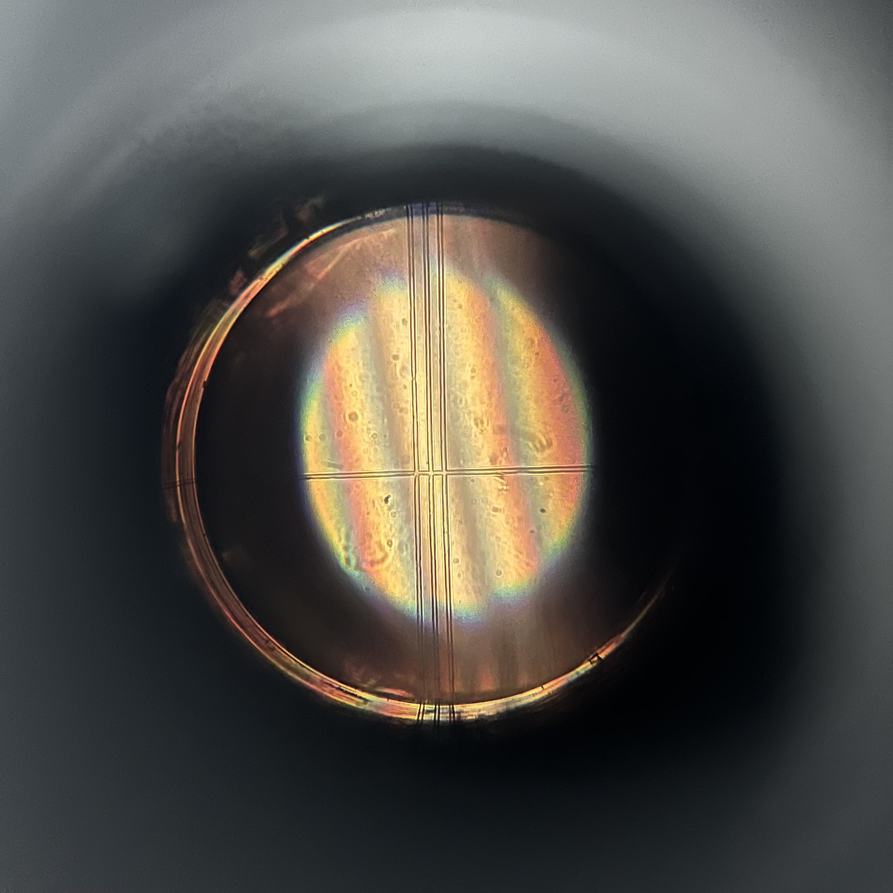
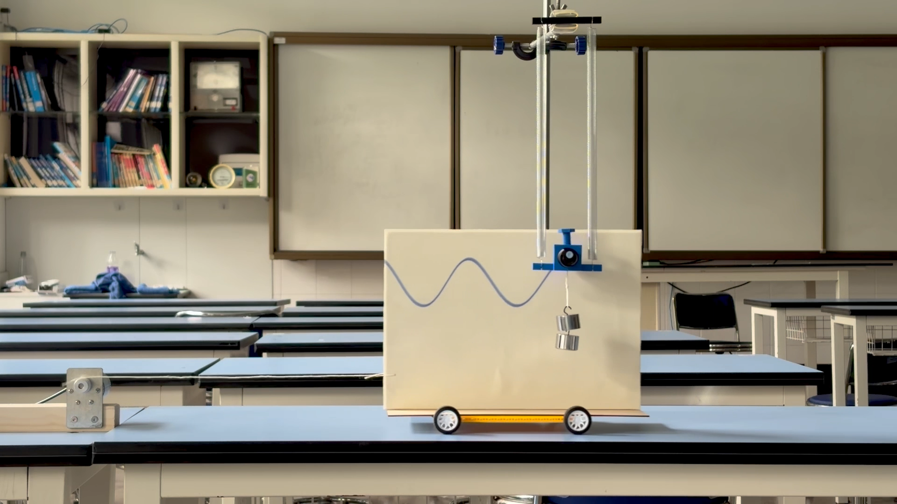
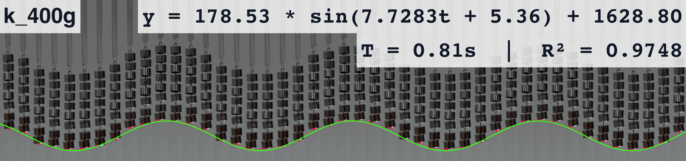
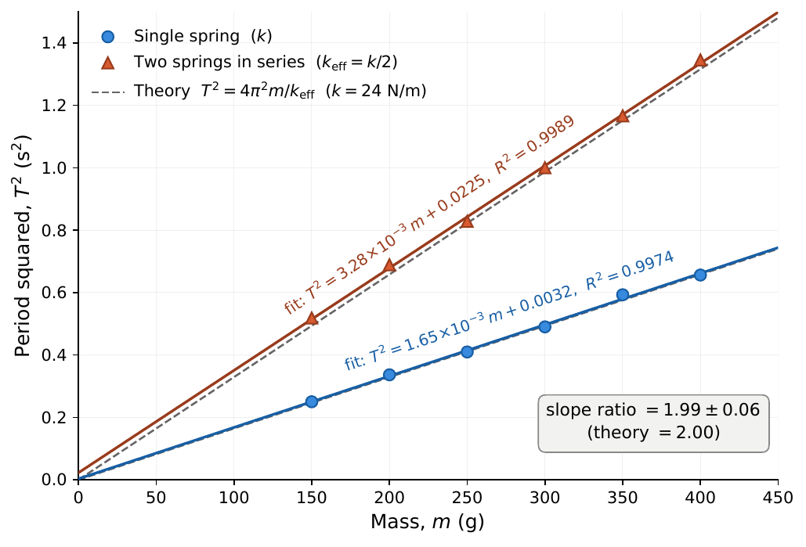
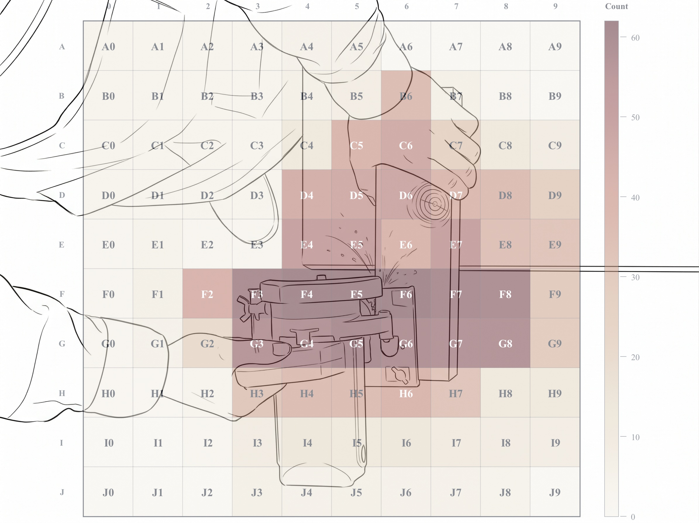

-
When the Pattern Comes Too Easily: What an AI Simulation Takes Away in the Optics Lab
A classroom study of 96 students compares learning Young's double-slit interference via physical apparatus versus an AI-generated simulation. The AI group scored higher on the written test but struggled badly on an unscripted diffraction task. AI aids test readiness, but removing too much experimental friction can erode the empirical judgment real inquiry needs.








-
Letting Time Lie Down: Visualizing and Quantifying Simple Harmonic Motion
A three-step sequence makes simple harmonic motion visible by unfolding its time axis into space. A laser on a spring–mass oscillator draws a glowing sinusoid; a free browser tool fits smartphone video to a sinusoid in seconds; pooled student data confirm T² ∝ m/k_eff to within 1%. It runs on equipment a school already owns.



-
No Left-Hander Left Behind: Finding the Right Way in the Physics Laboratory
Physics lab tools and safety procedures assume right-handed use. Across a 4,226-student survey, caliper tests, and video coding, left-handed students showed higher measurement errors, slower times, and riskier circular-saw positioning—despite equal academic performance. The paper offers inclusive fixes like handedness audits and symmetric instruments.





-
Conversion of P-Type SnO to N-Type SnO₂ Via Oxidation and the Band Offset and Rectification of an All-Tin Oxide P-N Junction Structure
p-Type Tin monoxide (SnO) is a metastable phase and can be oxidized into n-type SnO₂ in an O₂ environment during growth and post-growth annealing. Here we first grow SnO thin films by RF magnetron sputtering with different oxygen partial pressure in the sputtering gas followed by rapid thermal annealing (RTA) in O₂ to obtain n-type conducting SnO₂ films. We found that while after RTA in N₂ stoichiometric SnO film is p-type conducting, films sputtered with excess O and RTA in O₂ crystallize in rutile SnO₂ structure and exhibit n-type conductivity. Exploiting the transformation of p-SnO to n-SnO₂ through oxidation, we fabricate an all-Tin Oxide transparent p-n quasi-homojunction (p-SnO/n-SnO₂) and compare it to a p-SnO/n-ZnO heterojunction structure in term of their rectification behavior. XPS measurements reveal that both SnO₂ and ZnO at the Γ point exhibit a type II band offset with SnO with their respective valence band (conduction band) offset of 2.8 eV (1.9 eV) and 2.4 eV (1.33 eV). On the other hand, the indirect conduction band minimum of SnO shows a type I band offset in both junctions with a small conduction band offset of ∼0.1–0.17 eV. The SnO/SnO₂ p-n structure shows a reasonable rectification with an ideality factor of ∼12.3, which can be potentially useful in many transparent p-n junction based devices.
-
Improving the p–type conductivity of Cu₂O thin films by Ni doping and their heterojunction with n–ZnO
Cu₂O is one of the few transition metal oxides which can exhibit p–type conductivity due to native acceptor defects. Further improvements in the p–type conductivity of Cu₂O can be achieved via extrinsic doping and post–growth processing. In this work, we investigate the effects of Ni doping in Cu₂O with Ni content up to ∼11%. A variety of analytical techniques were utilized to investigate the structural, optical and electrical properties of these alloy thin films. We find that the incorporation of Ni improves the p–type conductivity of the films without altering the Cu₂O crystallographic structure and maintains a wide bandgap of ∼2.5 eV. X–ray photoelectron spectroscopy (XPS) measurements reveal that the Fermi level moves closer to the valence band with increasing x, in agreement with the increasing hole concentration. Significant improvement in the crystallinity as well as the p–type conductivity of the alloy films can be observed after rapid thermal annealing (RTA). In particular, alloys with x≥0.005 exhibit a high hole mobility µ∼12–22 cm²/V-s with low resistivity of ρ∼30–60 Ω-cm and free hole concentration N∼1×10¹⁶ cm⁻³ after RTA in air–N₂ ambient at 700°C. Such improvement can be attributed to the formation of Cu vacancies which promotes Ni substitution in the presence of small amount O₂ in the air–N₂ annealing environment. Finally, we fabricated a transparent p–(NiₓCu₁₋ₓ)₂O/n–ZnO heterojunction and evaluated its junction performance. XPS measurements reveal a type II band offset of this heterojunction with valence band and conduction band offsets of 2.81 eV and 2.07 eV, respectively. The heterojunction exhibits both rectification and photovoltaic response, demonstrating its potential for p–n junction and photodetection devices.